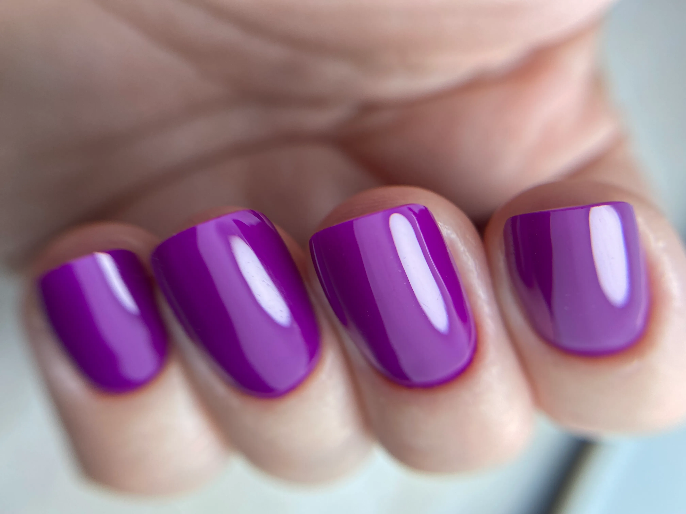
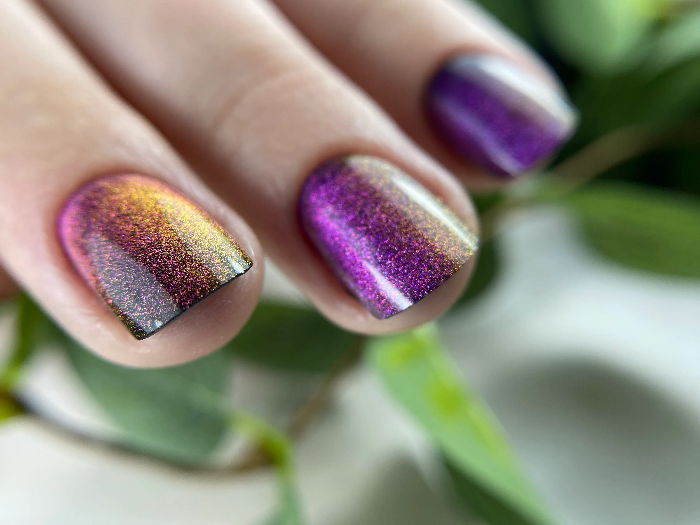
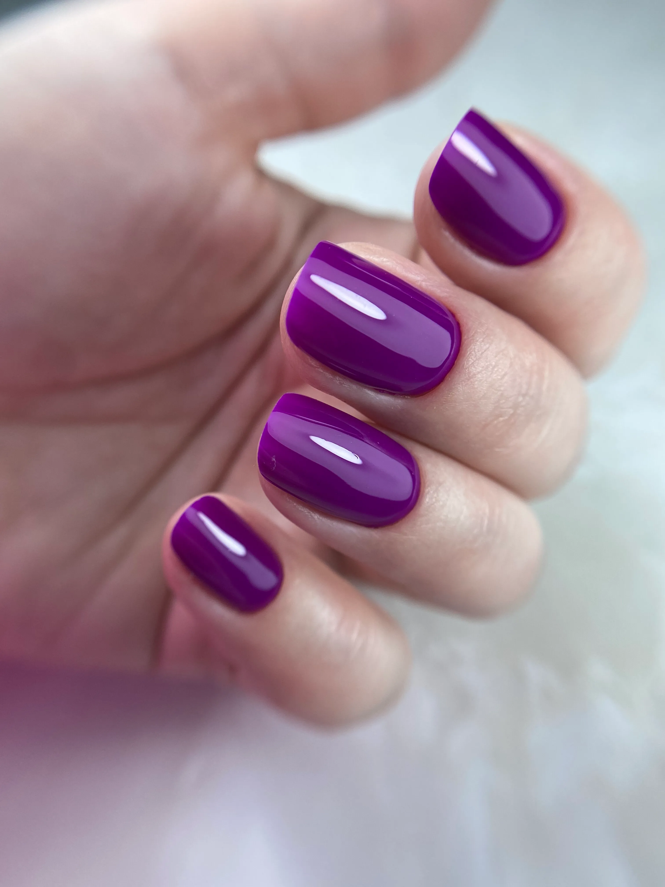
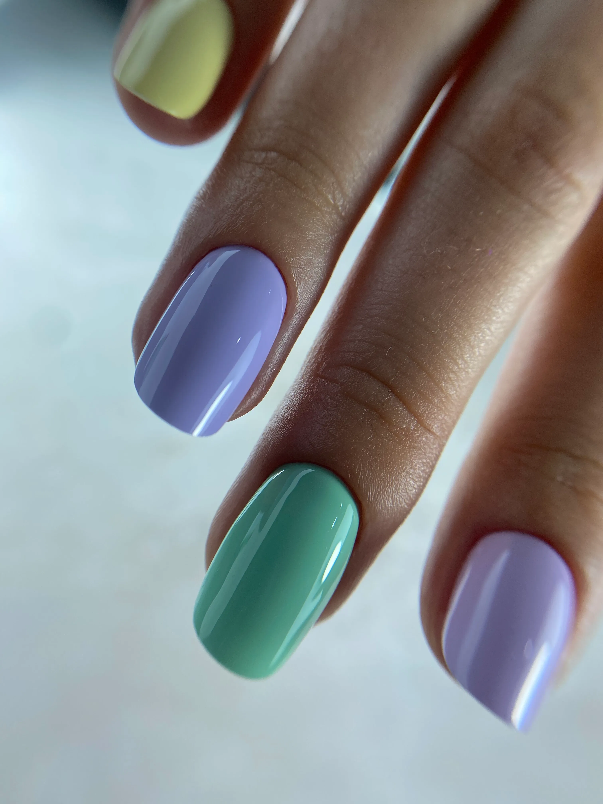
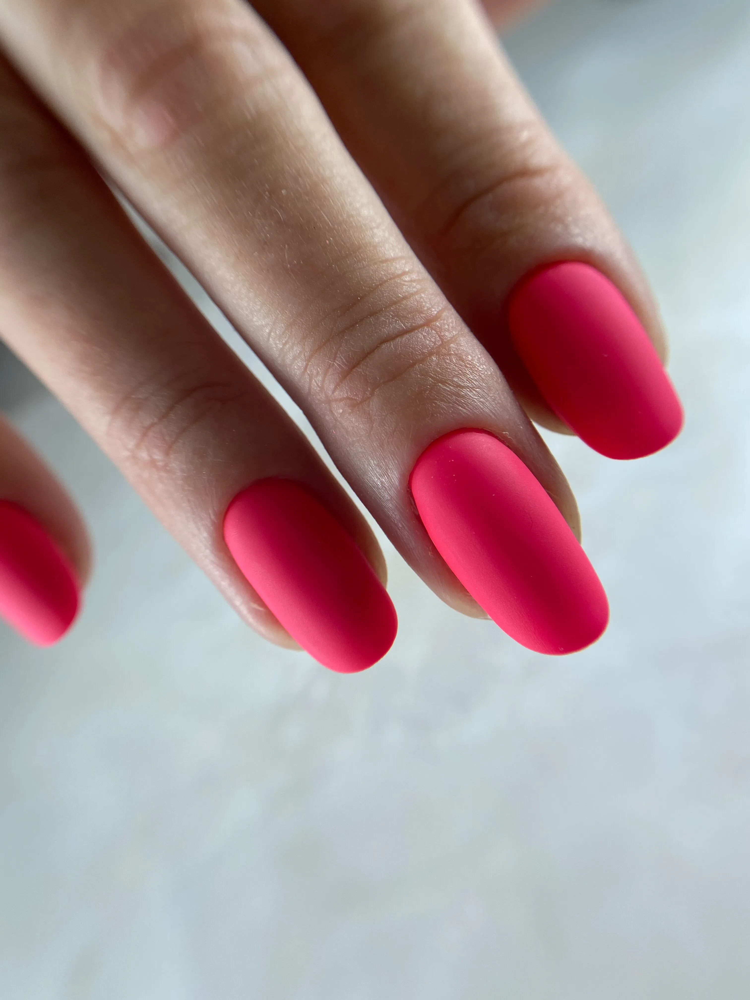

Cursusinhoud


13 modules: van theorie tot praktijk
Alles is opgebouwd zodat je stap voor stap meer controle krijgt over elke kleur.
1
Fase 1: Fundament
Modules 1–5 · Theorie, technieken & probleemkleuren
Module 1
Kleur begrijpen
- Verschil Paint Gel vs. Gelpolish
- Pigmentdichtheid: pastels vs. kleuren vs. zwart
- Sticky layer & non-sticky layer als voordeel
- Welke kleuren zijn "moeilijk" en waarom?
- Materialen voor nail art met polish
Module 2
De 5 dingen die je best niet doet
- 5 concrete fouten die bijna iedereen maakt
- Weten wat fout loopt = weten hoe je het oplost

Module 3
Penseeltechniek & applicatie
- Juiste penseelbeweging voor dekking & randen
- Druk, hoek en snelheid
- Penseelstrepen voorkomen
- De fine liner: gebruik & perfecte afwerking

Module 4
De probleemkleuren
- Pastels & witte tinten: de "pastelhorror"
- Glitters & cateye: hoe pak je die aan?
Module 5
Laagopbouw & dekking
- Dekkend in twee lagen: hoe pak je dat aan?
- Dunne vs. dikke lagen: risico's en gevolgen
2
Fase 2: Praktijk Cateye
Modules 6–7 · Stap voor stap cateye plaatsen
Module 6
Praktijk kleurapplicatie: Cateye blauw
- Voorbereidende stappen & fine liner in laag 1
- Eerste kleurlaag alle vingers
- Tweede kleurlaag & topcoat
- Strakke reflecties krijgen
Module 7
Praktijk kleurapplicatie: Cateye rood
- Materialen & eerste kleurlaag
- Tweede kleurlaag & topcoat
- Strakke reflecties & finishing touch
3
Fase 3: Kleurmeesters
Modules 8–10 · Paars, pastels & neon

Module 8
Praktijk kleurapplicatie: Paars
- Aandachtspunten voorbereiding
- Volledig stappenplan egale heldere kleur
- Resultaat & tips

Module 9
Praktijk kleurapplicatie: Pastel
- Ondergrond & aandachtspunten
- Pastel roze & paars: stap voor stap
- Pastel geel & groen: de moeilijkste
- Pastel blauw aanbrengen
- Tips rond afwerking

Module 10
Praktijk kleurapplicatie: Neon
- Tools & stappenplan neon kleuren
- Eerste & tweede kleurlaag
- Foutjes herstellen
- Afwerking & tips
4
Fase 4: Afwerking & Tools
Modules 11–13 · Finishing, adviestool & ombré bonus
Module 11
Finishing & glans
- Mijn 5 tips voor een mat of glanzende afwerking
- Mat topcoat vs. glitter topcoat: wanneer wat?
Bonus
Module 12
Kleurapplicatie tool
- Selecteer jouw kleur in de tool
- Krijg direct advies over stappenplan, ondergrond & lagen
- Mijn volledige materialenlijst inbegrepen
Nieuwe bonus
Module 13
Ombré techniek
- Stap voor stap een vloeiende kleurovergang plaatsen
- De juiste sponstechniek & materialen
- Veelgemaakte fouten en hoe je ze vermijdt
- Resultaat & finishing tips